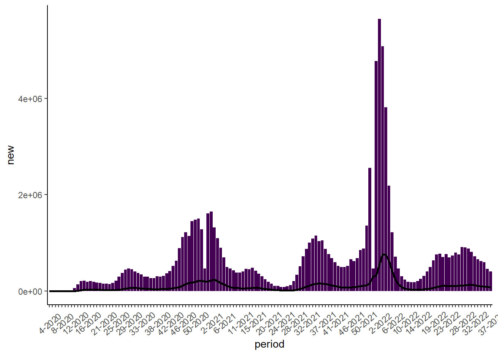

Weekly COVID Report, United States
Summary
Weekly COVID-19 Summary Table, United States
indicator | cum | new | avg | 7cum | change |
Cases | 95470430 | 57573 | 57356 | 120.9 | -12.2% |
Hospital Admissions | 5,306,620 | 3411 | 4104 | 8.7 | -10.2% |
Deaths | 1048148 | 328 | 365 | 0.8 | 2.8% |
Test Volume | 956,233,878 | N/A | 436,678 | 788.0 | -10.6% |
Test Positivity | 9.5% | N/A | 10.8% | N/A | -10.9% |
Weekly Trends in COVID-19 Cases, Hospitalizations, Deaths, and SARS-CoV Testing, United States
Cases

Hospital Admissions

Deaths

Testing

Cases
Top Jurisdictions by 7-Day Average per 100,000 Population
| Jurisdiction | Total Cases | New | Average | |||
|---|---|---|---|---|---|---|
| Last 24 Hours | Last 7 Days | Last 30 Days | 7-Day Avg | 7-Day Avg per 100k | ||
| Federated States of Micronesia | 10,010 | 0 | 634 | 91 | 88.9 | |
| Puerto Rico | 946,966 | 1,133 | 8,746 | 1,249 | 39.1 | |
| West Virginia | 595,044 | 689 | 4,603 | 658 | 36.7 | |
| Kentucky | 1,566,265 | 2,174 | 9,289 | 1,327 | 29.7 | |
| Connecticut | 887,501 | 1,153 | 6,898 | 985 | 27.6 | |
| Michigan | 2,804,588 | 0 | 18,375 | 2,625 | 26.3 | |
| Ohio | 3,117,109 | 0 | 20,552 | 2,936 | 25.1 | |
| New Jersey | 2,708,594 | 2,487 | 14,547 | 2,078 | 23.4 | |
| New York City | 2,845,390 | 0 | 13,477 | 1,925 | 22.9 | |
| Oklahoma | 1,190,969 | 1,776 | 6,307 | 901 | 22.8 | |
Deaths
Top Jurisdictions by 7-Day Average per 100,000 Population
| Jurisdiction | Total | New | Average | |||
|---|---|---|---|---|---|---|
| Last 24 Hours | Last 7 Days | Last 30 Days | 7-Day Avg | 7-Day Avg per 100k | ||
| Alaska | 1,329 | 0 | 25 | 4 | 0.5 | |
| West Virginia | 7,364 | 7 | 42 | 6 | 0.3 | |
| Michigan | 38,317 | 0 | 196 | 28 | 0.3 | |
| New Mexico | 8,515 | 6 | 32 | 5 | 0.2 | |
| South Dakota | 3,014 | 0 | 12 | 2 | 0.2 | |
| Idaho | 5,156 | 14 | 25 | 4 | 0.2 | |
| Georgia | 40,025 | 0 | 150 | 21 | 0.2 | |
| Tennessee | 27,626 | 41 | 89 | 13 | 0.2 | |
| Washington | 14,199 | 15 | 96 | 14 | 0.2 | |
| Wyoming | 1,888 | 0 | 4 | 1 | 0.2 | |